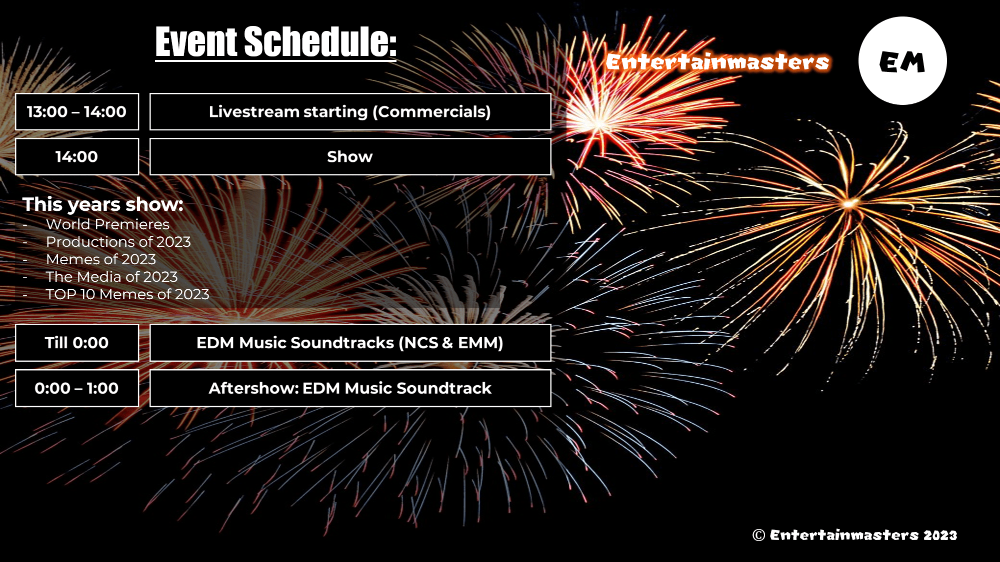

EntertainRewind 2023 - December 31 2023
EntertainRewind 2023 - December 31 2023
EntertainRewind 2023
This Year's EntertainRewind will have even more content than previous one. More soundtracks more segments and MORE ENTERTAINMENT!

What is EntertainRewind:
EntertainRewind (EMR) is a annual New Year's Eve celebration show established in 2018, hosted by Copy05, the Founder of Entertainmasters and Creator & Producer of EMR.
This event aims to celebrate New Year's Eve and honoring the Entertainment industry.
EntertainRewind also features exclusive world premieres of upcomming Entertainmasters projects and new information on previously-announced projects, We also feature Memes & Fails (Central Of Memes), A EDM Music Mix with a countdown and MORE!
The Show is streamed on Youtube at German Timezone (GMT+1)
Learn what EntertainRewind Is: About EntertainRewind Or check the Countdown